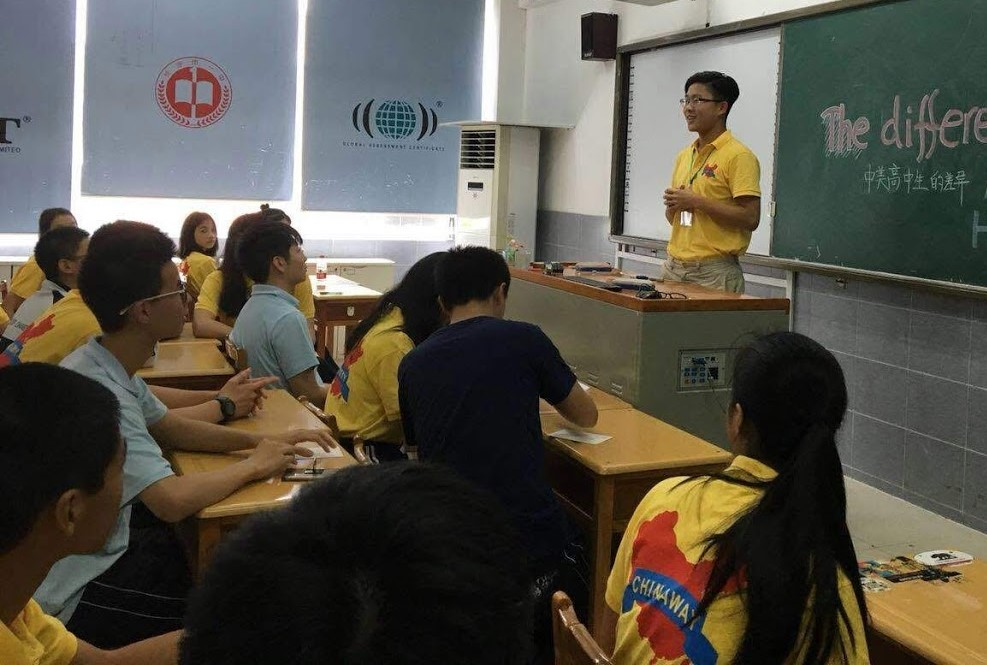

Our Mission
inGeniusX was founded on the belief that every student deserves the same opportunity to an enriching STEM education. If you introduce a child who has faced unimaginable things - poverty, death, crime, to STEM, you have the capacity to save a life. Learning the complex biological systems in ecosystems, coding your first program, understanding the laws of physics, each first step holds the potential for a bright and rising future.
The fact of the matter is, education saves lives. With inGeniusX, the goal is simple: let those in poverty, disenfranchised neighborhoods, underpriviledged areas know, that they too can be the scientist, doctor, or engineer that they aspire to be one day, regardless of the socioeconomic factors they were born into. At inGeniusX, we challenge the notion that those at the top stay at the top.
Background
The Eye Opener
In 2018, co-founder and president Rayan Yu had only heard of the extreme impoverishment in rural countries. To find out and assist on his own, Rayan pioneered a two month volunteering mission to the rural county of PingJiang, Hunan, China, a location of significant poverty for many families and children. When he got there, he witnessed firsthand: the accounts he had heard of were more than true. Students were studying under depressingly destitute conditions, with little to no progress at all. Throughout the trip, Rayan personally visited students homes to assist in their education, experiencing the true ordeals of countless childrens' lives. After personally tutoring, living with, and helping countless students for 8 hours a day, Rayan understood how fragmented opportunities truly were for such an unimaginable portion of the global youth.
To Do More

Coming home after his venture, Rayan set to do more. Although he had committed his entire break to this cause, Rayan felt that it was not enough. Seeing so many students in such distress drove him to create something more, something that would allow all students to enjoy at least some of the educational privileges that others had. As such, inGenius X came to be. After reaching out to Andrew Tran, they formed a dedicated team, one that had witnessed the struggles firsthand, and would work persistently to solve the issues. The motivation behind the cause was strongly impactful, reminding the founders that there was always a child out there, needing someone's help.